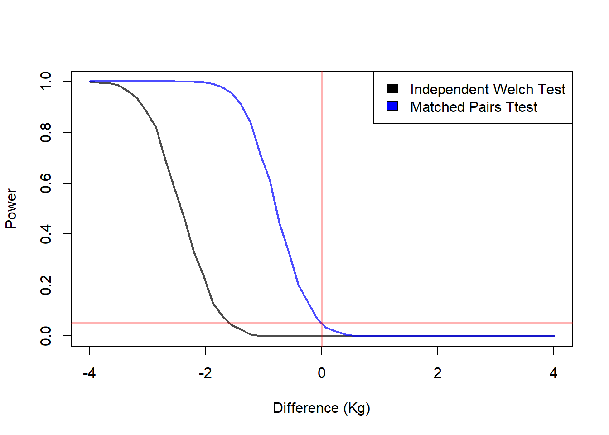
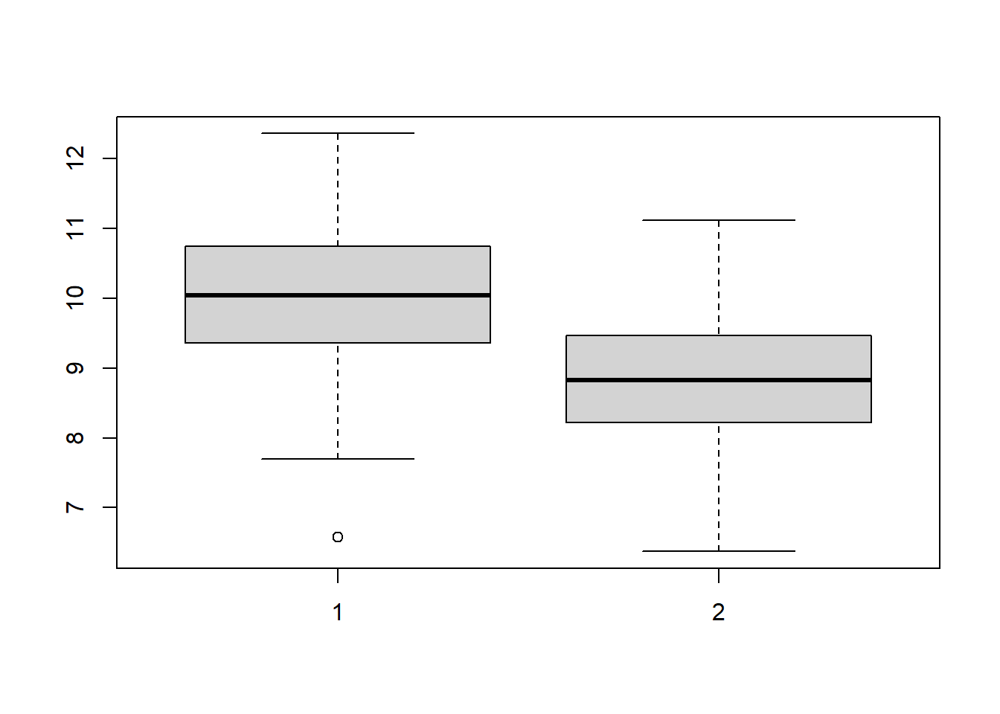
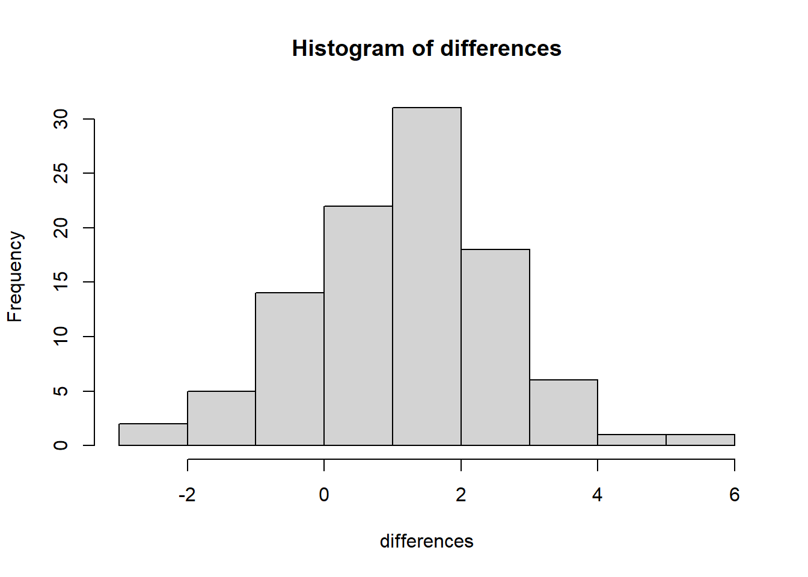

9 Inference Comparing Two Population Means
9.1 Introduction
In the previous chapter, we developed methods for making inference about a single population mean \(\mu\).
That setting is the natural starting point for statistical inference: one population, one parameter, one sample mean, and one standard error. However, many real scientific and practical questions are not about a single population in isolation. Instead, they ask whether two populations differ.
In this chapter, the parameter of interest becomes
\[ \mu_1 - \mu_2. \]
This quantity measures the difference between the central values of two populations.
This is one of the most important transitions in introductory inference. We are no longer trying to estimate or test the value of a single mean. Instead, we want to determine whether two conditions, groups, or populations differ, and if so, by how much.
Many practical questions are naturally comparative:
- Does a treatment change an outcome?
- Is one group larger than another on average?
- Do two populations differ in their central tendency?
- Is a new method better than an existing one?
- Does a change in design, policy, or intervention shift the average response?
As in the previous chapter, we will develop two main inferential tools:
- estimation, through confidence intervals
- hypothesis testing, through test statistics, rejection regions, and p-values
But now both are applied to a difference of means rather than a single mean.
A useful way to think about this chapter is the following:
- In Inference About the Mean, the basic question was:
What is the value of \(\mu\)? - In this chapter, the basic question becomes:
What is the value of \(\mu_1 - \mu_2\)?
That difference may be positive, negative, or zero, and each possibility has a direct scientific interpretation.
9.3 The Parameter of Interest
For one-sample inference, the parameter was simply
\[ \mu. \]
For two-sample inference, the parameter is
\[ \mu_1 - \mu_2. \]
This is not a minor change in notation. It changes the interpretation of the whole problem.
Now we are not asking:
What is the population mean?
Instead we are asking:
How far apart are the two population means?
Interpretation:
- \(\mu_1 - \mu_2 = 0\) means no average difference
- \(\mu_1 - \mu_2 > 0\) means population 1 tends to be larger
- \(\mu_1 - \mu_2 < 0\) means population 2 tends to be larger
In the drug example, if population 1 is the drug group and population 2 is the placebo group, then
- negative values suggest the drug lowers caloric intake
- positive values suggest the drug increases caloric intake
- zero suggests no average effect
So the sign of the difference matters, not just whether it is zero.
9.4 The Role of Study Design
Before performing any inference, we must identify the data structure.
This is not a minor technical detail. It is the foundation of the analysis.
The study design determines:
- the parameter to estimate
- the assumptions required
- the form of the standard error
- the test statistic
- the valid confidence interval
- the valid hypothesis test
Two studies may address exactly the same scientific question and yet require different methods simply because the observations were collected differently.
9.4.1 Independent Samples
In an independent-samples design:
- observations in one group are unrelated to observations in the other group
- each subject contributes only one observation
- the two samples are statistically independent
Example:
- unrelated individuals randomly assigned to drug or placebo
Here, the comparison is made between two separate groups.
Because the data come from different subjects, the variability in the comparison comes from two sources:
- variation within the treatment group
- variation within the control group
9.4.2 Paired Data
In a paired design:
- observations are matched
- each observation in one group corresponds to one observation in the other group
- the comparison is made within each matched pair
Example:
- twins, where one twin receives the drug and the other receives the placebo
Here, the analysis focuses on within-pair differences rather than on raw group means.
This often reduces noise because the pairing controls for some of the natural subject-to-subject variation.
9.5 Motivating Example: Appetite Inhibitor Drug
We will use the following example throughout the chapter.
Researchers want to study whether a new appetite inhibitor drug reduces average caloric intake.
This is a good running example because it is simple, realistic, and flexible enough to illustrate two different study designs that lead to two different inferential methods.
The response variable is:
- daily caloric intake
The scientific question is:
Does the drug reduce the average amount of calories consumed?
At first glance, this may appear to be a single question with a single answer. But statistically, the correct method depends crucially on how the data were collected.
9.5.1 Independent Samples
Suppose the researchers recruit unrelated individuals and randomly assign them to one of two groups:
- treatment group: receives the drug
- control group: receives a placebo
Each subject belongs to only one group.
The two groups are therefore composed of different individuals, and the observations from one group are not naturally linked to the observations from the other group.
This produces independent samples.
In this setting, the inferential target is the difference between the two population means:
\[ \mu_1 - \mu_2, \]
where, for example,
- \(\mu_1\) = mean caloric intake for the drug group
- \(\mu_2\) = mean caloric intake for the placebo group
If the drug works, we would expect the treatment group to have a lower mean caloric intake than the control group, so we would expect
\[ \mu_1 - \mu_2 < 0. \]
9.5.2 Paired Data
Now suppose the researchers instead study pairs of twins.
For each pair:
- one twin receives the drug
- the other twin receives the placebo
Because twins are naturally similar in many relevant ways, such as genetics, upbringing, and often eating patterns, this design creates a natural matching structure.
The two observations in a pair are not unrelated. They are deliberately linked.
This produces paired data.
The scientific question is the same:
Does the drug reduce average caloric intake?
But the statistical structure is different.
Instead of comparing two unrelated group means directly, we compare the two observations within each pair and study the differences. That changes:
- the parameter
- the estimator
- the standard error
- the assumptions
- the correct inferential procedure
The key lesson is:
The scientific question may stay the same, but the correct statistical method depends on the design.
That is why the first task in any comparative inference problem is not writing a formula.
It is identifying the structure of the data.
These designs answer the same scientific question but require different methods.
A common mistake in practice is to focus only on the scientific question and ignore the design. That often leads to using the wrong standard error and therefore the wrong inference.
So before doing any calculations, always ask:
- Are the two samples unrelated?
- Or are the observations naturally paired?
That question determines everything that follows.
9.6 Assumptions
9.6.1 Independent Samples
Suppose we observe
\[ X_1,\dots,X_{n_1}, \quad Y_1,\dots,Y_{n_2}. \]
You can think of the \(X\) values as observations from population 1 and the \(Y\) values as observations from population 2.
For the appetite inhibitor example:
- \(X_1,\dots,X_{n_1}\) might be caloric intakes for the drug group
- \(Y_1,\dots,Y_{n_2}\) might be caloric intakes for the placebo group
The usual assumptions are:
Observations within each sample are independent
The two samples are independent of each other
Subjects are unrelated across groups
The treatment assignment is random, or the samples are obtained in a way that justifies comparison
Each population has a mean and variance
The population distributions are approximately normal, or the sample sizes are large enough for the CLT to make the sampling distribution of the difference approximately normal
The parameter of interest is
\[ \mu_1 - \mu_2. \]
A useful interpretation is:
- if \(\mu_1 - \mu_2 = 0\), there is no average difference
- if \(\mu_1 - \mu_2 < 0\), population 1 tends to have smaller values
- if \(\mu_1 - \mu_2 > 0\), population 1 tends to have larger values
The exact interpretation depends on how population 1 and population 2 are defined.
9.6.2 Paired Data
For paired data, we do not begin with two unrelated samples.
Instead, we begin with pairs of observations. For pair \(i\), let
\[ D_i = X_i - Y_i. \]
In the twin example:
- \(X_i\) could be the caloric intake for the twin receiving the drug
- \(Y_i\) could be the caloric intake for the twin receiving the placebo
Then \(D_i\) measures the treatment effect within that pair.
The parameter of interest is now
\[ \mu_D, \]
the mean of the population of pairwise differences.
This is a very important simplification:
A paired-data problem is reduced to a one-sample inference problem on the differences.
So once the differences \(D_1,\dots,D_n\) are formed, the methods connect directly to Inference About the Mean.
The assumptions are therefore:
The differences \(D_1,\dots,D_n\) are independent
The population of differences is approximately normal, or the sample size is large
The key point is that for paired data, the inferential object is not the raw group means separately. It is the mean difference within pairs.
9.7 The Estimator
9.7.1 Independent Samples
The natural estimator of \(\mu_1 - \mu_2\) is
\[ \bar{X} - \bar{Y}. \]
This simply compares the sample centers.
This is intuitive: if the two populations differ in mean, then the two sample means should reflect that difference, at least approximately.
This estimator is the two-sample analogue of the sample mean in one-sample inference.
9.7.2 Paired Data
The natural estimator of \(\mu_D\) is
\[ \bar{D}. \]
This is the sample mean of the paired differences, where
\[ D_i = X_i - Y_i. \]
This simply compares the two observations within each pair and then averages those differences across all pairs.
This is intuitive: if there is a systematic difference between the two conditions, then the pairwise differences should tend to be consistently positive or consistently negative, and their average should reflect that.
This estimator is the matched-pairs analogue of the sample mean in one-sample inference, because once the differences are formed, the problem becomes a one-sample inference problem for the population mean difference \(\mu_D\).
9.8 Sampling Distribution of the Difference
9.8.1 Independent Samples
The variability of the estimator now comes from both samples.
That is one of the main conceptual differences from one-sample inference.
For one sample, the uncertainty came from the variability of one sample mean.
For two samples, the uncertainty comes from the variability of two sample means, both contributing to the uncertainty in the difference.
For large samples,
\[ \bar{X} - \bar{Y} \]
is approximately normal.
More specifically, when the samples are independent,
\[ \mathbb{E}(\bar{X} - \bar{Y}) = \mu_1 - \mu_2 \]
and
\[ \mathbb{V}(\bar{X} - \bar{Y}) = \mathbb{V}(\bar{X}) + \mathbb{V}(\bar{Y}). \]
So the variance of the difference is the sum of the variances of the two sample means.
This is the reason the standard error for two-sample inference has two pieces.
9.8.2 Paired Data
The variability of the estimator now comes from the variability of the pairwise differences.
That is the main conceptual difference from the independent-samples case.
For independent samples, the uncertainty came from two separate sample means.
For matched pairs, the uncertainty comes from the variability of the single sample
\[ D_1, D_2, \dots, D_n, \]
where
\[ D_i = X_i - Y_i. \]
So once the differences are formed, the problem is reduced to a one-sample inference problem.However notice the following:
\[ \sigma^2_D = \mathbb{V}(D_i) = \mathbb{V}(X_i - Y_i) = \mathbb{V}(X_i) + \mathbb{V}(Y_i) - 2 \mathbb{C}(X_i, Y_i) = \sigma^2_1 + \sigma^2_2 - 2\sigma_{1, 2} \] The term \(- 2 \mathbb{C}(X_i, Y_i)\) can reduce the variability of the difference considerably.
For large samples,
\[ \bar{D} \]
is approximately normal.
More specifically,
\[ \mathbb{E}(\bar{D}) = \mu_D \]
and
\[ \mathbb{V}(\bar{D}) = \frac{\sigma_D^2}{n}. \]
So the variance of the estimator depends only on the population variance of the paired differences.
This is the reason the standard error for matched-pairs inference has the one-sample form
\[ \frac{s_D}{\sqrt{n}}. \]
The key point is that, in matched pairs, the analysis is based on the differences within pairs, not on the two original samples separately.
9.9 Pivotal Quantities
9.9.1 Independent Samples
Depending on the information available. We will use different pivotal quantities.
9.9.1.1 Known Variance
The pivotal quantity that we are going to use is given by:
\[ Z = \frac{(\bar{X} - \bar{Y}) - (\mu_1 - \mu_2)}{\sqrt{\frac{\sigma^2_1}{n_1}+\frac{\sigma^2_2}{n_2}}} \sim N(0,1) \]
9.9.1.2 Unknown Variance
When the variance is unknown, things get more complicated, however if we make the assumption that the variance for both groups is equal, we can still work with an exact distribution. If however this assumptions is not realistic, we will work with an approximation.
9.9.1.2.1 Equal Variance
The pivotal quantity is given by:
\[ T = \frac{(\bar{X} - \bar{Y}) - (\mu_1 - \mu_2)}{s_p\sqrt{\frac{1}{n_1}+\frac{1}{n_2}}} \sim t_{n_1+n_2-2} \] where:
\[ s_p^2 = \frac{(n_1-1)s_1^2 + (n_2-1)s_2^2}{n_1+n_2-2}. \] This is a weighted average of the two sample variances, where the weights are their degrees of freedom.
The logic is:
- if the populations really have the same variance
- then both samples are providing information about that same common variability
- so combining them gives a more stable estimate
This leads to a pooled standard error.
However, this assumption should not be used automatically. It should only be used when it is substantively reasonable and the sample variances are not very different.
9.9.1.2.2 Unequal Variance
When the variances are unknown and unequal, the pivotal quantity distribution is only known approximately (a result found by Welch), as follows:
\[ T = \frac{(\bar{X} - \bar{Y}) - (\mu_1 - \mu_2)}{\sqrt{\frac{s^2_1}{n_1}+\frac{s^2_2}{n_2}}} t_\nu \] where the degrees of freedom are given by: \[ \nu= \frac{\left(\frac{s_1^2}{n_1}+\frac{s_2^2}{n_2}\right)^2} {\frac{\left(\frac{s_1^2}{n_1}\right)^2}{n_1-1}+\frac{\left(\frac{s_2^2}{n_2}\right)^2}{n_2-1}}. \]
Note: Even though the distribution of the pivotal quantity is approximate the result is fairly robust, and delivers similar performance as the \(t\) test for equal variances when the variances are indeed equal. Given this, absent any prior information for about the equality of the variances, the Welch approximation is preferred.
9.9.2 Paired Data
For paired data, we will use the same pivotal quantities that we use for one sample. The difference in the pivotal quantities will depend if the variance of the difference is known or not.
That is it will depend if the variance is known or not. That is, if
\[ \sigma^2_D \] is known. Notice however that \(\sigma^2_D = \sigma^2_1 + \sigma^2_2 - 2\sigma_{1, 2}\), what would happen if we know \(\sigma^2_1\) and \(\sigma^2_2\) but not \(\sigma_D^2\)? If we estimate \(\sigma^2_D\) as we did in the one sample procedures, we will be wasting information.
9.10 Confidence Intervals
A point estimate gives only one number. It does not tell us how uncertain that estimate is.
A confidence interval gives a range of plausible values for the population difference.
That is usually more informative than the point estimate alone.
We will use the distributions of the pivotal quantities to find the confidence intervals.
9.10.1 Independent Samples
9.10.1.1 Known Variances
When the population variances are known, the confidence interval is
\[ (\bar{X}-\bar{Y}) \pm z_{\alpha/2} SE. \] where \[ SE = \sqrt{\frac{\sigma_1^2}{n_1}+\frac{\sigma_2^2}{n_2}} \]
This is the exact analogue of the one-sample \(z\) interval, except that now the center is \(\bar{X}-\bar{Y}\) and the standard error is the two-sample standard error.
The structure is the same as always:
- estimate \(\pm\) critical value \(\times\) standard error
The width of the interval depends on:
- the confidence level
- the standard error
Larger samples produce smaller standard errors, which produce narrower intervals.
# Simulation Example
# Weight Drug
# Parameters
mu1 <- 70 # Mean weight Appetite Suppressing Drug
mu2 <- 80 # Mean Weight Placebo
sd1 <- 10 # SD weight Appetite Suppressing Drug
sd2 <- 10 # SD Weight Placebo
n1 <- 20 # Number of Individuals on the Drug
n2 <- 20 # Number of Individuals on the Placebo
a <- 0.05 # 1-Confidence Level
knoVar <- 1 # Indicator For Known Variance
# Simulation Settings
B <- 1000
# Computes Confidence Intervals
conInt <- replicate(n = B, {
# Simulates a Drug Trial
x1 <- rnorm(n = n1, mean = mu1, sd = sd1)
x2 <- rnorm(n = n2, mean = mu2, sd = sd2)
# Statistics
xBar1 <- mean(x1)
xBar2 <- mean(x2)
se <- sqrt(sd1^2/n1 + sd2^2/n2)
# Quantile
za <- qnorm(p = 1-a/2)
# Confidence Interval Bounds
low <- (xBar1 - xBar2) - za * se
upp <- (xBar1 - xBar2) + za * se
# Returns the COnfidence Interval
c(low, upp)
})
conInt <- t(conInt)
# Checks Coverage
dif <- mu1 - mu2
cov <- (conInt[, 1] < dif) & (conInt[, 2] > dif)
print(paste0("The Mean Coverage is: ", round(mean(cov), 2)))## [1] "The Mean Coverage is: 0.95"9.10.1.2 Unknown and Equal Variances
When the variances are unknown, we replace the normal critical value with a \(t\) critical value:
\[ (\bar{X}-\bar{Y}) \pm t_{\alpha/2} SE. \] where:
\[ SE = s_p\sqrt{\frac{1}{n_1}+\frac{1}{n_2}} \] This reflects the additional uncertainty introduced by estimating variance from the data.
So, just as in one-sample inference:
- known variance \(\rightarrow\) use \(z\)
- unknown variance \(\rightarrow\) use \(t\)
The difference is that now the standard error has two-sample form rather than one-sample form.
# Simulation Example
# Weight Drug
# Parameters
mu1 <- 70 # Mean weight Appetite Suppressing Drug
mu2 <- 80 # Mean Weight Placebo
sd1 <- 10 # SD weight Appetite Suppressing Drug
sd2 <- 10 # SD Weight Placebo
n1 <- 2 # Number of Individuals on the Drug
n2 <- 2 # Number of Individuals on the Placebo
a <- 0.05 # 1-Confidence Level
knoVar <- 1 # Indicator For Known Variance
# Simulation Settings
B <- 1000
# Computes Confidence Intervals
conInt <- replicate(n = B, {
# Simulates a Drug Trial
x1 <- rnorm(n = n1, mean = mu1, sd = sd1)
x2 <- rnorm(n = n2, mean = mu2, sd = sd2)
# Statistics
xBar1 <- mean(x1)
xBar2 <- mean(x2)
s1 <- sd(x1)
s2 <- sd(x2)
sp <- sqrt(((n1 - 1)*s1^2 + (n2)*s2^2)/(n1+n2-1))
se <- sp * sqrt(1/n1+1/n2)
# Quantile
za <- qnorm(p = 1-a/2)
ta <- qt(p = 1-a/2, df = n1 + n2 - 2)
# Confidence Interval Bounds (Correct)
low <- (xBar1 - xBar2) - ta * se
upp <- (xBar1 - xBar2) + ta * se
# Confidence Interval Bounds (Incorrect)
lowInc <- (xBar1 - xBar2) - za * se
uppInc <- (xBar1 - xBar2) + za * se
# Returns the Confidence Interval
c(low, upp, lowInc, uppInc)
})
conInt <- t(conInt)
# Checks Coverage and Interval Length (Correct)
dif <- mu1 - mu2
cov <- (conInt[, 1] < dif) & (conInt[, 2] > dif)
print(paste0("The average coverage is: ", round(mean(cov), 2)))## [1] "The average coverage is: 0.95"## [1] "The average interval lenght is: 77.786620174323"# Checks Coverage and Interval Length (Correct)
dif <- mu1 - mu2
cov <- (conInt[, 3] < dif) & (conInt[, 4] > dif)
print(paste0("The average coverage is (Incorrect): ", round(mean(cov), 2)))## [1] "The average coverage is (Incorrect): 0.81"## [1] "The average interval lenght is (Incorrect): 35.4337158020297"9.10.1.3 Unknown and Unequal Variances
When the variances are unknown and unequal we use the Welch confidence interval for \(\mu_1-\mu_2\) is
\[ (\bar{X}-\bar{Y}) \pm t_{\alpha/2,\nu}SE \] where
\[ SE = \sqrt{\frac{s_1^2}{n_1}+\frac{s_2^2}{n_2}} \]
and
\[ \nu= \frac{\left(\frac{s_1^2}{n_1}+\frac{s_2^2}{n_2}\right)^2} {\frac{\left(\frac{s_1^2}{n_1}\right)^2}{n_1-1}+\frac{\left(\frac{s_2^2}{n_2}\right)^2}{n_2-1}}. \]
# Simulation Example
# Weight Drug
# Parameters
mu1 <- 70 # Mean weight Appetite Suppressing Drug
mu2 <- 80 # Mean Weight Placebo
sd1 <- 20 # SD weight Appetite Suppressing Drug
sd2 <- 10 # SD Weight Placebo
n1 <- 10 # Number of Individuals on the Drug
n2 <- 5 # Number of Individuals on the Placebo
a <- 0.05 # 1-Confidence Level
knoVar <- 1 # Indicator For Known Variance
# Simulation Settings
B <- 1000
# Computes Confidence Intervals
conInt <- replicate(n = B, {
# Simulates a Drug Trial
x1 <- rnorm(n = n1, mean = mu1, sd = sd1)
x2 <- rnorm(n = n2, mean = mu2, sd = sd2)
# Statistics
xBar1 <- mean(x1)
xBar2 <- mean(x2)
s1 <- sd(x1)
s2 <- sd(x2)
v <- s1^2/n1+s2^2/n2
se <- sqrt(v)
c <- (s1^2 / n1) / (v)
df <- floor((n1 - 1)*(n2 - 2) / ((1 - c)^2 * (n1 - 1) + c^2 * (n2 - 1)))
# Quantile
ta <- qt(p = 1-a/2, df = df)
# Confidence Interval Bounds (Correct)
low <- (xBar1 - xBar2) - ta * se
upp <- (xBar1 - xBar2) + ta * se
# Confidence Interval Bounds (Inorrect)
sp <- sqrt(((n1 - 1)*s1^2 + (n2)*s2^2)/(n1+n2-1))
se <- sp * sqrt(1/n1+1/n2)
# Quantile
ta <- qt(p = 1-a/2, df = n1 + n2 - 2)
# Incorrect Confidence Intervals
lowInc <- (xBar1 - xBar2) - ta * se
uppInc <- (xBar1 - xBar2) + ta * se
# Returns the COnfidence Interval
c(low, upp, lowInc, uppInc)
})
conInt <- t(conInt)
# Checks Coverage and Interval Length (Correct)
dif <- mu1 - mu2
cov <- (conInt[, 1] < dif) & (conInt[, 2] > dif)
print(paste0("The average coverage is: ", round(mean(cov), 2)))## [1] "The average coverage is: 0.96"## [1] "The average interval lenght is: 35.1663050377732"# Checks Coverage and Interval Length (Correct)
dif <- mu1 - mu2
cov <- (conInt[, 3] < dif) & (conInt[, 4] > dif)
print(paste0("The average coverage is (Incorrect): ", round(mean(cov), 2)))## [1] "The average coverage is (Incorrect): 0.97"## [1] "The average interval lenght is (Incorrect): 39.4332008052844"9.10.2 Paired Data
As we said before, when we have paired data, the confidence intervals are built following the techniques for one sample. However, let’s see if what happens when we use the paired data one sample approach when the data is really paired and when not.
9.10.2.1 Example Difference Between Independent and Paired Data
# Simulation Example
# Weight Drug
source("./winklerIntervalScore.R")
# Parameters
sd1 <- 20 # SD weight Appetite Suppressing Drug
sd2 <- 10 # SD Weight Placebo
n1 <- 100 # Number of Individuals on the Drug
n2 <- n1 # Number of Individuals on the Placebo
a <- 0.05 # 1-Confidence Level
knoVar <- 1 # Indicator For Known Variance
mat <- FALSE # Indicator for Matched Data
# Relationship Between Pairs
meaPro <- 0.875
sdPro <- 0.05
shape1 <- meaPro * (meaPro * (1 - meaPro)/(sdPro^2) - 1)
shape2 <- (1 - meaPro) * (meaPro * (1 - meaPro)/(sdPro^2) - 1)
if(mat){
mu2 <- 80 # Mean Weight Placebo
mu1 <- meaPro * mu2 # Mean Weight Appetite Suppressing Drug
} else {
mu1 <- 70 # Mean weight Appetite Suppressing Drug
mu2 <- 80 # Mean Weight Placebo
}
# Simulation Settings
B <- 1000
# Computes Confidence Intervals
conInt <- replicate(n = B, {
# Simulates a Drug Trial
if(mat){
x2 <- rnorm(n = n2, mean = mu2, sd = sd2)
x1 <- rbeta(n = n1, shape1 = shape1, shape2 = shape2) * x2
} else {
x1 <- rnorm(n = n1, mean = mu1, sd = sd1)
x2 <- rnorm(n = n2, mean = mu2, sd = sd2)
}
# Statistics
xBar1 <- mean(x1)
xBar2 <- mean(x2)
dBar <- xBar1 - xBar2
s1 <- sd(x1)
s2 <- sd(x2)
sdD <- sd(x1 - x2) / sqrt(n1)
v <- s1^2/n1+s2^2/n2
se <- sqrt(v)
c <- (s1^2 / n1) / (v)
df <- floor((n1 - 1)*(n2 - 2) / ((1 - c)^2 * (n1 - 1) + c^2 * (n2 - 1)))
# Confidence Interval Bounds (Independent)
# Quantile
ta <- qt(p = 1-a/2, df = df)
# Bounds
lowInd <- (xBar1 - xBar2) - ta * se
uppInd <- (xBar1 - xBar2) + ta * se
# Confidence Interval Bounds (Paired)
# Quantile
ta <- qt(p = 1-a/2, df = n1)
# Bounds
lowPar <- (xBar1 - xBar2) - ta * sdD
uppPar <- (xBar1 - xBar2) + ta * sdD
# Returns the Confidence Interval
c(lowInd, uppInd, lowPar, uppPar)
})
conInt <- t(conInt)
# Checks Coverage and Interval Length (Correct)
dif <- mu1 - mu2
cov <- (conInt[, 1] < dif) & (conInt[, 2] > dif)
print(paste0("The average coverage using the method for Independent Data is: ", round(mean(cov), 2)))## [1] "The average coverage using the method for Independent Data is: 0.94"print(paste0("The average interval lenght using the method for Independent Data is: ", mean(conInt[, 2] - conInt[, 1])))## [1] "The average interval lenght using the method for Independent Data is: 8.81956337650097"# Checks Coverage and Interval Length (Correct)
dif <- mu1 - mu2
cov <- (conInt[, 3] < dif) & (conInt[, 4] > dif)
print(paste0("The average coverage using the method for Paired Data is: ", round(mean(cov), 2)))## [1] "The average coverage using the method for Paired Data is: 0.94"print(paste0("The average interval lenght using the method for Paired Data is: ", mean(conInt[, 4] - conInt[, 3])))## [1] "The average interval lenght using the method for Paired Data is: 8.83927261258301"9.10.3 Test Statistic
The test statistic will depend on the method employed, and is linked to the previously employed pivotal quantities.
9.10.3.1 Independent Samples
The test statistic will depend on weather the variance is known or not.
9.10.3.1.1 Known Variance
The test statistic is given by:
\[ Z = \frac{(\bar{X} - \bar{Y})}{\sqrt{\frac{\sigma^2_1}{n_1}+\frac{\sigma^2_2}{n_2}}} \] which, under the null hypothesis, we have that:
\[ Z|H_0 \sim N(0,1) \]
9.10.3.1.2 Unknown Variance
The test statistic when the variance is unknown, depends on weather the variance of the two populations are assumed to be equal or not.
9.10.3.1.2.1 Equal Variance
The test statistic is given by:
\[ T = \frac{(\bar{X} - \bar{Y})}{s_p\sqrt{\frac{1}{n_1}+\frac{1}{n_2}}} \] where:
\[ s_p^2 = \frac{(n_1-1)s_1^2 + (n_2-1)s_2^2}{n_1+n_2-2}. \] and under the null hypothesis we have that:
\[ T|H_0 \sim t_{n_1+n_2-2} \]
# Parameter Settings
sk1 <- 1000 # Bigger is less skewness
sk2 <- sk1 # Bigger is less skewness
mu1 <- 10
mu2 <- 10
n1 <- 10
n2 <- 5
sd1 <- 3
sd2 <- sd1
a <- 0.05
# Replication Settings
B <- 10000
rej <- replicate(n = B, {
# Samples
x1 <- (rchisq(n1, df = sk1) - sk1) / sqrt(2 * sk1) * sd1 + mu1
x2 <- (rchisq(n2, df = sk2) - sk2) / sqrt(2 * sk2) * sd2 + mu2
# Rank Sum Test (Normal Approximation)
# Statistics
xBar1 <- mean(x1)
xBar2 <- mean(x2)
s1 <- sd(x1)
s2 <- sd(x2)
sp <- sqrt(((n1 - 1)*s1^2 + (n2)*s2^2)/(n1+n2-1))
se <- sp * sqrt(1/n1+1/n2)
# Test Statistic
t <- (xBar1 - xBar2) / se
# Quantile
ta <- qt(p = 1-a, df = n1 + n2 - 2)
# Checks if Rejects
t > ta
})
print(paste0("Rejection % (Pooled Variance): ", mean(rej * 100)))## [1] "Rejection % (Pooled Variance): 4.92"9.10.3.1.2.2 Unequal Variance
When the variances are unknown and unequal, the test statistic distribution is only known approximately (a result found by Welch), an is given as:
\[ T = \frac{(\bar{X} - \bar{Y})}{\sqrt{\frac{s^2_1}{n_1}+\frac{s^2_2}{n_2}}} t_\nu \] and under the null hypothesis the distribution is approximately given as:
\[ T|H_0 \sim t_\nu \] where the degrees of freedom are given by: \[ \nu= \frac{\left(\frac{s_1^2}{n_1}+\frac{s_2^2}{n_2}\right)^2} {\frac{\left(\frac{s_1^2}{n_1}\right)^2}{n_1-1}+\frac{\left(\frac{s_2^2}{n_2}\right)^2}{n_2-1}}. \]
# Parameter Settings
sk1 <- 1000 # Bigger is less skewness
sk2 <- 1000 # Bigger is less skewness
mu1 <- 10
mu2 <- 10
n1 <- 10
n2 <- 5
sd1 <- 3
sd2 <- 1
a <- 0.05
# Replication Settings
B <- 10000
rej <- replicate(n = B, {
# Samples
x1 <- (rchisq(n1, df = sk1) - sk1) / sqrt(2 * sk1) * sd1 + mu1
x2 <- (rchisq(n2, df = sk2) - sk2) / sqrt(2 * sk2) * sd2 + mu2
# Rank Sum Test (Normal Approximation)
# Statistics
xBar1 <- mean(x1)
xBar2 <- mean(x2)
s1 <- sd(x1)
s2 <- sd(x2)
sp <- sqrt(((n1 - 1)*s1^2 + (n2)*s2^2)/(n1+n2-1))
se <- sp * sqrt(1/n1+1/n2)
# Test Statistic
t <- (xBar1 - xBar2) / se
# Quantile
ta <- qt(p = 1-a, df = n1 + n2 - 2)
# Checks if Rejects
rejPoo <- t > ta
# Welch Method Test
# Statistics
xBar1 <- mean(x1)
xBar2 <- mean(x2)
s1 <- sd(x1)
s2 <- sd(x2)
v <- s1^2/n1+s2^2/n2
se <- sqrt(v)
c <- (s1^2 / n1) / (v)
df <- floor((n1 - 1)*(n2 - 2) / ((1 - c)^2 * (n1 - 1) + c^2 * (n2 - 1)))
# Test Statistic
t <- (xBar1 - xBar2) / se
# Quantile
ta <- qt(p = 1-a, df = df)
# Checks if Rejects
rejWel <- t > ta
# Saves the Rejection Decisions
c(rejPoo, rejWel)
})
rej <- t(rej)
print(paste0("Rejection % (Pooled Variance): ", mean(rej[, 1] * 100)))## [1] "Rejection % (Pooled Variance): 1.98"## [1] "Rejection % (Welch Test): 4.1"9.11 Hypothesis Testing
9.11.1 Formulating the Hypotheses
The usual null hypothesis is
\[ H_0:\mu_1-\mu_2 = \mu_D =0. \]
This represents no average difference.
The alternative depends on the scientific question.
For the appetite inhibitor example, if we expect the drug to reduce caloric intake, we use
\[ H_a:\mu_1-\mu_2<0. \]
This is a left-tailed test because negative values favor the scientific claim.
In other problems, the alternative may be:
- \(H_a:\mu_1-\mu_2>0\)
- \(H_a:\mu_1-\mu_2\ne 0\)
The choice of alternative should be determined by the scientific question before looking at the data.
9.11.2 Logical Structure of the Test
The logic is the same as Inference About the Mean.
We proceed by contradiction:
- Assume \(H_0\) is true
- Determine what kinds of sample differences would be unusual under that assumption
- Reject \(H_0\) if the observed data are too inconsistent with the null model
The null hypothesis does not say the sample means must be exactly equal. It says the population means are equal.
So the question becomes:
Is the observed sample difference large enough, relative to its standard error, that it would be difficult to explain by random sampling alone?
That is exactly what the test statistic measures.
9.11.3 Test Statistic
The test statistic will depend on the method employed, and is linked to the previously employed pivotal quantities.
9.11.3.1 Independent Samples
The test statistic will depend on weather the variance is known or not.
9.11.3.1.1 Known Variance
The test statistic is given by:
\[ Z = \frac{(\bar{X} - \bar{Y})}{\sqrt{\frac{\sigma^2_1}{n_1}+\frac{\sigma^2_2}{n_2}}} \] which, under the null hypothesis, we have that:
\[ Z|H_0 \sim N(0,1) \]
9.11.3.1.2 Unknown Variance
The test statistic when the variance is unknown, depends on weather the variance of the two populations are assumed to be equal or not.
9.11.3.1.2.1 Equal Variance
The test statistic is given by:
\[ T = \frac{(\bar{X} - \bar{Y})}{s_p\sqrt{\frac{1}{n_1}+\frac{1}{n_2}}} \] where:
\[ s_p^2 = \frac{(n_1-1)s_1^2 + (n_2-1)s_2^2}{n_1+n_2-2}. \] and under the null hypothesis we have that:
\[ T|H_0 \sim t_{n_1+n_2-2} \] ###### Unequal Variance
When the variances are unknown and unequal, the test statistic distribution is only known approximately (a result found by Welch), an is given as:
\[ T = \frac{(\bar{X} - \bar{Y})}{\sqrt{\frac{s^2_1}{n_1}+\frac{s^2_2}{n_2}}} t_\nu \] and under the null hypothesis the distribution is approximately given as:
\[ T|H_0 \sim t_\nu \] where the degrees of freedom are given by: \[ \nu= \frac{\left(\frac{s_1^2}{n_1}+\frac{s_2^2}{n_2}\right)^2} {\frac{\left(\frac{s_1^2}{n_1}\right)^2}{n_1-1}+\frac{\left(\frac{s_2^2}{n_2}\right)^2}{n_2-1}}. \]
9.11.4 Paired Data
For paired data, the same test statistics used in the case of one population are used.
9.11.5 Rejection Region and p-Value
Once the test statistic is computed, we proceed in one of two equivalent ways.
- Compare the test statistic to a critical value
- Or compute the p-value
The rejection region gives a threshold for what counts as unusually extreme under \(H_0\).
The p-value gives the probability, assuming \(H_0\) is true, of obtaining a result at least as extreme as the one observed.
A small p-value means the observed result would be hard to explain if the null hypothesis were true.
9.11.5.1 Independent Samples
9.11.5.1.1 Known Variance
The rejection region when the variance is known depends on the alternative hypothesis, the observed value (\(z\)) and the significance level (\(\alpha\)) as follows:
\[ H_1: \mu_0 \neq \mu_1 \Rightarrow |z| > z_{\frac{\alpha}{2}} \] \[ H_1: \mu_0 > \mu_1 \Rightarrow z > z_{\alpha} \] \[ H_1: \mu_0 < \mu_1 \Rightarrow z < z_{\alpha} \] and the p-values are given by:
\[ H_1: \mu_0 \neq \mu_1 \Rightarrow \mathbb{P}(|Z| > z) \] \[ H_1: \mu_0 > \mu_1 \Rightarrow \mathbb{P}(Z > z) \] \[ H_1: \mu_0 < \mu_1 \Rightarrow \mathbb{P}(Z < z) \] where \(Z\) is distributed as a standard normal.
9.11.5.1.2 Unknown Variance
When the variance is unknown, there will be two cases.
9.11.5.1.2.1 Equal Variance
The rejection region when the variance is unknown and the variances are assumed equal depends on the alternative hypothesis, the observed value \(t\) and the significance level (\(\alpha\)) as follows:
\[ H_1: \mu_0 \neq \mu_1 \Rightarrow |t| > t_{n_1+n_2-2,\frac{\alpha}{2}} \] \[ H_1: \mu_0 > \mu_1 \Rightarrow t > t_{n_1+n_2-2,\alpha} \] \[ H_1: \mu_0 < \mu_1 \Rightarrow t < t_{n_1+n_2-2,\alpha} \] and the p-values are given by:
\[ H_1: \mu_0 \neq \mu_1 \Rightarrow \mathbb{P}(|T| > t) \] \[ H_1: \mu_0 > \mu_1 \Rightarrow \mathbb{P}(T > t) \] \[ H_1: \mu_0 < \mu_1 \Rightarrow \mathbb{P}(T < t) \] where
\[ T \sim t_{n_1+n_2-2} \]
9.11.5.1.2.2 Unequal Variance
The rejection region when the variance is unknown and the variances are unequal depends on the alternative hypothesis, the observed value \(t\) and the significance level (\(\alpha\)) as follows:
\[ H_1: \mu_0 \neq \mu_1 \Rightarrow |t| > t_{\nu,\frac{\alpha}{2}} \] \[ H_1: \mu_0 > \mu_1 \Rightarrow t > t_{\nu,\alpha} \] \[ H_1: \mu_0 < \mu_1 \Rightarrow t < t_{\nu,\alpha} \] and
\[ \nu= \frac{\left(\frac{s_1^2}{n_1}+\frac{s_2^2}{n_2}\right)^2} {\frac{\left(\frac{s_1^2}{n_1}\right)^2}{n_1-1}+\frac{\left(\frac{s_2^2}{n_2}\right)^2}{n_2-1}}. \]
and the p-values are given by:
\[ H_1: \mu_0 \neq \mu_1 \Rightarrow \mathbb{P}(|T| > t) \] \[ H_1: \mu_0 > \mu_1 \Rightarrow \mathbb{P}(T > t) \] \[ H_1: \mu_0 < \mu_1 \Rightarrow \mathbb{P}(T < t) \] where
\[ T \sim t_{\nu } \] and
\[ \nu= \frac{\left(\frac{s_1^2}{n_1}+\frac{s_2^2}{n_2}\right)^2} {\frac{\left(\frac{s_1^2}{n_1}\right)^2}{n_1-1}+\frac{\left(\frac{s_2^2}{n_2}\right)^2}{n_2-1}}. \]
9.12 Power
Using the optimal method can have severe effects on power, and therefore on detecting an effect. Here we illustrate the difference in power when the data experiment was conducted using matched pairs, we can see the effects of using the matched pairs approach and the independent samples approach.
# Simulation Example
# Weight Drug
# Parameters
sd1 <- 20 # SD weight Appetite Suppressing Drug
sd2 <- 10 # SD Weight Placebo
n1 <- 100 # Number of Individuals on the Drug
n2 <- n1 # Number of Individuals on the Placebo
a <- 0.05 # 1-Confidence Level
knoVar <- 1 # Indicator For Known Variance
mat <- TRUE # Indicator for Matched Data
# Relationship Between Pairs
S <- 50
vecPro <- seq(0.95, 1.05, length.out = S)
sdPro <- 0.1
mu2 <- 80 # Mean Weight Placebo
# Simulation Settings
B <- 2000
# Probability of Rejection
proRej <- matrix(data = NA, nrow = S, ncol = 2)
for(i in 1:S){
meaPro <- vecPro[i]
# Computes Confidence Intervals
rej <- replicate(n = B, {
# Simulates a Drug Trial
if(mat){
x2 <- rnorm(n = n2, mean = mu2, sd = sd2)
x1 <- runif(n = n1, min = meaPro - sdPro, max = meaPro + sdPro) * x2
} else {
x1 <- rnorm(n = n1, mean = meaPro * mu2, sd = sd1)
x2 <- rnorm(n = n2, mean = mu2, sd = sd2)
}
# Statistics
xBar1 <- mean(x1)
xBar2 <- mean(x2)
dBar <- xBar1 - xBar2
s1 <- sd(x1)
s2 <- sd(x2)
sdD <- sd(x1 - x2) / sqrt(n1)
v <- s1^2/n1+s2^2/n2
se <- sqrt(v)
c <- (s1^2 / n1) / (v)
df <- floor((n1 - 1)*(n2 - 2) / ((1 - c)^2 * (n1 - 1) + c^2 * (n2 - 1)))
# Confidence Interval Bounds (Independent)
# Quantile
ta <- qt(p = a, df = df)
# Test Statistic
t <- dBar / se
# Rejection Desicion
rejInd <- t < ta
# Confidence Interval Bounds (Paired)
# Quantile
ta <- qt(p = a, df = n1)
# Test Statistic
t <- dBar / sdD
# Rejection Desicion
rejPar <- t < ta
# Returns the COnfidence Interval
c(rejInd, rejPar)
})
proRej[i, ] <- rowMeans(rej)
}
# Plots the Power Curve we change the Difference
dif <- (vecPro - 1) * mu2
xmin <- min(dif)
xmax <- max(dif)
plot(y = proRej[, 1],
x = dif,
type = 'l',
ylim = c(0, 1),
xlim = c(xmin, xmax),
lwd = 2,
col = rgb(0, 0, 0, 0.7),
xlab = "Difference (Kg)",
ylab = "Power")
par(new=TRUE)
plot(y = proRej[, 2],
x = dif,
type = 'l',
ylim = c(0, 1),
xlim = c(xmin, xmax),
lwd = 2,
col = rgb(0, 0, 1, 0.7),
xlab = "",
ylab = "")
abline(v = 0, col = rgb(1, 0, 0, 0.3), lwd = 2)
abline(h = a, col = rgb(1, 0, 0, 0.3), lwd = 2)
legend("topright",
legend = c("Independent Welch Test", "Matched Pairs Ttest"),
fill = c('black', 'blue'))
9.13 Interpreting the Design
9.13.1 When Are Samples Independent?
Samples are independent when the observations in one group are unrelated to the observations in the other group.
Typical examples:
- unrelated individuals assigned to separate groups
- two independently selected groups from two populations
- two groups where no observation in one group is naturally matched to an observation in the other
This is the default two-sample setting.
9.13.2 Why Random Assignment Matters
Random assignment is important because it helps make the comparison fair.
If subjects are randomly assigned to treatment and control, then on average:
- the groups should be similar before treatment
- systematic bias is reduced
- differences after treatment can be more credibly attributed to the treatment rather than to preexisting group differences
So random assignment strengthens the interpretation of the causal claim.
Without random assignment, differences between groups may reflect confounding rather than treatment effect.
9.13.3 Common Mistake: Treating Paired Data as Independent
This is one of the most important design mistakes in practice.
In the twin example, if we ignore pairing and analyze the data as though the twins were unrelated individuals, we lose useful information.
Why?
Because pairing was introduced specifically to control variability. Twins are similar, so comparing them within pair removes much of the irrelevant subject-to-subject variation.
If we ignore that structure, we treat the data as noisier than they really are.
This usually leads to:
- larger standard errors
- less precise inference
- reduced power
So pairing should not be viewed as a nuisance detail. It is a design feature that can substantially improve inference.
9.13.4 Why Pairing Can Increase Precision
Pairing can increase precision because it removes variability due to systematic differences between subjects.
In the twin example, much of the subject-to-subject variation is shared within a pair.
By comparing twins to each other rather than comparing unrelated people across groups, we reduce noise.
This often leads to:
- smaller variance of the differences
- smaller standard error
- narrower confidence intervals
- more powerful tests
So pairing is especially useful when the matched units are genuinely similar.
If the pairing is weak or artificial, the gain may be small. But when the pairing is strong, it can substantially improve inference.
9.14 Independent Samples vs Paired Data
9.14.1 How to Decide Which Method to Use
The rule is straightforward:
- unrelated observations \(\rightarrow\) independent samples
- matched or repeated observations \(\rightarrow\) paired data
What matters is not whether there are two columns of numbers. What matters is whether the observations in one column are naturally linked to the observations in the other.
That is the structural question that determines the method.
9.14.2 Why the Choice Matters
The choice matters because it determines:
- the parameter
- the estimator
- the standard error
- the reference distribution
- the interpretation of the result
Using the wrong method usually means using the wrong standard error, which then distorts the confidence interval and test.
So the design decision is not just conceptual. It directly affects the numerical inference.
9.14.3 Compact Comparison Table
| Design | Parameter | Estimator | SE |
|---|---|---|---|
| Independent | \(\mu_1-\mu_2\) | \(\bar{X}-\bar{Y}\) | two-sample standard error |
| Paired | \(\mu_D\) | \(\bar{D}\) | \(s_D/\sqrt{n}\) |
This table is useful because it summarizes the main distinction:
- independent design compares two separate sample means
- paired design reduces the problem to one sample of differences
9.15 Two-Sample Inference When Populations Are Not Normal
9.15.1 Why Normality Matters
The \(t\) procedures are derived under distributional assumptions.
When the sample sizes are small, those assumptions matter much more.
If the population distributions are highly skewed or contain extreme outliers, then the sampling distribution of the test statistic may not be well approximated by the \(t\) distribution.
That can affect:
- Confidence interval coverage
- Type I error rate
- Power
So before using mean-based methods, we should think not only about formulas, but also about whether the underlying assumptions are reasonable.
9.15.2 Large Sample Size
When sample sizes are large, the Central Limit Theorem helps.
Even if the original population distributions are not normal, the sampling distribution of the sample mean, and therefore often the difference of sample means, is approximately normal for sufficiently large samples.
So for large samples, mean-based methods are often fairly robust.
That does not mean assumptions are irrelevant. Extreme outliers and very heavy skewness can still cause problems. But large samples generally make the methods much more reliable.
9.15.3 Intermediate Sample Size
For moderate sample sizes, graphical inspection becomes more important.
We should check:
- skewness
- outliers
- overall shape
If the data are roughly symmetric and do not contain severe outliers, the \(t\) methods are often still reasonable.
If the data are clearly skewed or contain strong outliers, the approximation may be poor.
9.15.4 Small Sample Size
When sample sizes are small, the shape of the population matters much more.
If the data are small-sample and far from normal, mean-based procedures can be unreliable.
This is especially important because small samples do not average out irregularities in the way large samples do.
So in small samples:
- normality assumptions matter
- outliers matter a great deal
- graphical inspection matters
- alternative methods may be preferable
9.16 Nonparametric Alternatives
9.16.1 Why Nonparametric Methods Are Useful
Nonparametric methods are useful because they rely less heavily on strong distributional assumptions.
They are especially helpful when:
- the sample size is small
- the data are skewed
- outliers are present
- the normality assumption is doubtful
In many practical situations, the issue is not that the usual two-sample methods are always wrong.
The issue is that their performance may become unreliable when the sample sizes are small and the data do not look reasonably symmetric and well behaved.
Nonparametric methods provide alternative ways to compare groups that are often more stable in those situations.
Some nonparametric procedures use ranks rather than the raw numerical values.
Others use resampling ideas, such as randomization or bootstrap methods.
So, nonparametric inference is not a single method.
It is a family of approaches designed to make comparisons with fewer modeling assumptions.
9.16.2 Wilcoxon Rank Sum Test
This is the main nonparametric alternative for independent samples.
It is used when:
- the samples are independent
- the normality assumption is doubtful
- a rank-based comparison is preferred
Conceptually, instead of comparing the sample means directly, it compares the relative positions of the two groups after ranking all the observations together.
If one group tends to have smaller values than the other, its observations should tend to receive smaller ranks.
If one group tends to have larger values, its observations should tend to receive larger ranks.
So the Wilcoxon rank sum test is sensitive to a general shift in location between the two groups.
This makes it appealing when the data contain skewness or outliers, because ranks are less affected by extreme observations than raw values are.
However, it is important to remember that this test is not literally a test about the difference in means in the same way as the two-sample \(t\) test.
When the two populations have a similar shape, the Wilcoxon rank sum test is often interpreted as a comparison of central location.
More generally, it is testing whether one population tends to produce larger observations than the other.
Here is an example contrasting the Rank Sum test and the Welch Statistic
# Parameter Settings
sk1 <- 1
sk2 <- sk1
mu1 <- 10
mu2 <- 10
n1 <- 5
n2 <- 10
sd1 <- 4
sd2 <- sd1
a <- 0.05
# Replication Settings
B <- 100000
rej <- replicate(n = B, {
# Samples
x1 <- (rchisq(n1, df = sk1) - sk1) / sqrt(2 * sk1) * sd1 + mu1
x2 <- (rchisq(n2, df = sk2) - sk2) / sqrt(2 * sk2) * sd2 + mu2
# Rank Sum Test (Normal Approximation)
# Gets Ranks
x12 <- c(x1, x2)
ordX12 <- order(x12)
ordX1 <- ordX12[1:n1]
# Computes the T statistic
tsta <- sum(ordX1)
# Computes the Mean and Variance
Tmea <- n1 * (n1 + n2 + 1) / 2
Tvar <- n1 * n2 * (n1 + n2 + 1) / 12
# Standarizes
zsta <- (tsta - Tmea) / sqrt(Tvar)
# Computes the Quantile for Rejecton
za <- qnorm(p = 1-a)
# Checks if Rejects
rejRan <- zsta > za
# Rank Sum Test (Normal Approximation)
xBar1 <- mean(x1)
xBar2 <- mean(x2)
dBar <- xBar1 - xBar2
s1 <- sd(x1)
s2 <- sd(x2)
v <- s1^2/n1+s2^2/n2
se <- sqrt(v)
c <- (s1^2 / n1) / (v)
df <- floor((n1 - 1)*(n2 - 2) / ((1 - c)^2 * (n1 - 1) + c^2 * (n2 - 1)))
# Confidence Interval Bounds (Independent)
# Quantile
ta <- qt(p = a, df = df)
# Test Statistic
t <- dBar / se
# Rejection Desicion
rejWel <- t < ta
c(rejRan, rejWel)
})
rej <- t(rej)
print(paste0("Rejection % (Rank Sum Test): ", mean(rej[, 1] * 100)))## [1] "Rejection % (Rank Sum Test): 5.058"## [1] "Rejection % (Welch Test): 7.637"9.16.3 Wilcoxon Signed-Rank Test
This is the nonparametric alternative for paired data.
It is based on the paired differences.
Conceptually, it examines:
- the signs of the differences
- the ranks of their absolute values
So it uses more information than a simple sign test, because it takes into account not only whether the difference is positive or negative, but also whether the difference is small or large.
This makes it a useful alternative to the paired \(t\) test when the distribution of the paired differences is not close to normal.
As with the rank sum test, it is best thought of as a procedure for comparing location in a way that is less sensitive to nonnormality and extreme observations.
9.16.4 Randomization Test for 2 Sample Means
Another useful nonparametric approach for independent samples is the randomization test.
This method is especially attractive because it works directly with the statistic we care about:
\[ \bar{X} - \bar{Y} \]
So unlike the Wilcoxon rank sum test, which is based on ranks, the randomization test can target the difference in means itself.
That is an important advantage when the mean is still the parameter of interest, but the usual normal-theory assumptions are doubtful.
9.16.4.1 Basic Idea
Suppose we want to test
\[ H_0: \mu_1 - \mu_2 = 0 \]
against an alternative such as
\[ H_a: \mu_1 - \mu_2 \ne 0 \]
or a one-sided alternative.
Under the null hypothesis of no treatment effect, the group labels should not matter.
If the two groups really come from the same population under \(H_0\), then after pooling all observations together, any reassignment of the observations into two groups of sizes \(n_1\) and \(n_2\) is just as plausible as the original one.
So the randomization test asks:
How unusual is the observed difference in sample means compared with all differences we could get just by randomly reallocating the group labels?
This creates a reference distribution for the statistic under the null hypothesis without requiring a normal population model.
9.16.4.2 Exact Randomization Test
When the sample sizes are small, we can sometimes perform the randomization test exactly.
The steps are:
- Compute the observed statistic
\[ T_{obs} = \bar{X} - \bar{Y} \]
Pool all observations from both groups into one combined set.
Consider all possible ways to split the pooled observations into two groups of sizes \(n_1\) and \(n_2\).
For each possible split, compute the difference in sample means
\[ T = \bar{X}^{*} - \bar{Y}^{*} \]
- Compare the observed statistic \(T_{obs}\) to this complete randomization distribution.
For a two-sided test, the \(p\)-value is the proportion of reallocations for which
\[ |T| \ge |T_{obs}|. \]
For a right-tailed test, the \(p\)-value is the proportion for which
\[ T \ge T_{obs}. \]
For a left-tailed test, the \(p\)-value is the proportion for which
\[ T \le T_{obs}. \]
This is called an exact randomization test because it uses the full null distribution generated by all possible reallocations.
The advantage is that no large-sample approximation is needed.
The limitation is computational: when the sample sizes get larger, the number of possible reallocations becomes enormous.
9.16.4.3 Why This Is Nonparametric
The randomization test is called nonparametric here because it does not start by assuming a normal distribution for either population.
Instead, it builds the null distribution from the observed data themselves by using the idea of exchangeability under the null hypothesis.
So the logic is based more on the design of the comparison than on a specific probability model.
9.16.4.4 Bootstrap Approximation to the Randomization Test
When the sample sizes are too large for the exact procedure to be practical, we can approximate the randomization distribution by simulation.
A simple approach is:
- Compute the observed statistic
\[ T_{obs} = \bar{X} - \bar{Y}. \]
Pool all observations.
Randomly shuffle the pooled data.
Split the shuffled data into two groups of sizes \(n_1\) and \(n_2\).
Compute the difference in means for that shuffled split.
Repeat this process many times.
The resulting simulated values approximate the randomization distribution under the null hypothesis.
Then the approximate \(p\)-value is computed as the proportion of simulated differences that are at least as extreme as the observed one.
This is often called a Monte Carlo randomization test.
In practice, many people loosely describe this kind of repeated resampling approximation as a bootstrap-style approach because it uses repeated data-based simulation rather than a closed-form distribution.
Here is an example of the Bootstrap Randomization compared to the Pooled Test.
### Test Settings
a <- 0.05
sk1 <- 2
sk2 <- 2
n1 <- 4
n2 <- 10
mu1 <- 10
mu2 <- 10
sd1 <- 2
sd2 <- 2
### Simulation Settings
B <- 1000
### Simulation Settings
S <- 1000
# Saves Rejections
rejBoo <- rep(NA, 100)
rejPoo <- rep(NA, 100)
for(i in 1:S){
# Sampling
x1 <- (rchisq(n1, df = sk1) - sk1) / sqrt(2 * sk1) * sd1 + mu1
x2 <- (rchisq(n2, df = sk2) - sk2) / sqrt(2 * sk2) * sd2 + mu2
# Testing Bootstrap
x <- c(x1, x2)
n1 <- length(x1)
n2 <- length(x2)
# Bootstrapping
booD <- replicate(n = B, {
booInd <- sample(x = 1:(n1+n2), size = n1, replace = FALSE)
booX1 <- x[ booInd]
booX2 <- x[-booInd]
mean(booX1) - mean(booX2)
})
#
actD <- mean(x1) - mean(x2)
pVal <- 1 - mean(actD > booD)
rejBoo[i] <- pVal < a
# Testing for Pooled Variance
# Statistics
xBar1 <- mean(x1)
xBar2 <- mean(x2)
s1 <- sd(x1)
s2 <- sd(x2)
sp <- sqrt(((n1 - 1)*s1^2 + (n2)*s2^2)/(n1+n2-1))
se <- sp * sqrt(1/n1+1/n2)
# Quantile
ta <- ta <- qt(p = 1-a, df = n1 + n2 - 2)
# Test Statistic
t <- (xBar1 - xBar2) / se
# Rejection Desicion
rejPoo[i] <- t > ta
}
print(paste0("Reject (Bootstrap Randomization): ", round(mean(rejBoo) * 100, 2), "%"))## [1] "Reject (Bootstrap Randomization): 4.6%"## [1] "Reject (Pooled): 6.3%"9.16.4.5 Bootstrap Confidence Interval for the Difference in Means
The randomization test is naturally a testing method, but bootstrap ideas can also be used to construct a confidence interval for
\[ \mu_1 - \mu_2. \]
A common approach is:
- Resample with replacement from group 1 to obtain a bootstrap sample.
- Resample with replacement from group 2 to obtain a bootstrap sample.
- Compute the bootstrap statistic
\[ (\bar{X} - \bar{Y})^{*}. \]
- Repeat this many times to build a bootstrap distribution.
- Use percentiles of that distribution to form an approximate confidence interval.
For example, a simple percentile bootstrap interval uses the 2.5th and 97.5th percentiles of the bootstrap distribution.
This approach is useful when the sampling distribution of \(\bar{X} - \bar{Y}\) is difficult to approximate well with standard theory, especially in small or moderately sized samples with noticeable skewness.
9.16.4.6 Randomization Test Versus Wilcoxon Rank Sum Test
These two methods are related in spirit, but they are not the same.
The Wilcoxon rank sum test:
- is rank-based
- is less sensitive to outliers
- is often interpreted as a comparison of location
The randomization test for two sample means:
- works directly with the difference in sample means
- keeps the focus on the mean as the parameter of interest
- avoids relying on a normal-theory null distribution
So if the scientific question is specifically about means, the randomization approach is often very appealing.
If the data are highly skewed or contain strong outliers and a rank-based comparison is more appropriate, the Wilcoxon procedure may be preferable.
9.16.5 Parametric vs Nonparametric Thinking
A useful distinction is:
- parametric methods are model-based
- nonparametric methods are less model-dependent
Parametric methods target quantities like the mean and rely on a probability model for the data, such as normality or approximate normality.
Nonparametric methods often rely on ranks, permutations, or resampling ideas.
Because of that, they are often less sensitive to model misspecification and outliers.
However, they may target a slightly different type of comparison.
For example:
- the two-sample \(t\) procedure directly targets \(\mu_1 - \mu_2\)
- the Wilcoxon rank sum test is based on relative ranks
- a randomization test for two means still targets the difference in means, but avoids a normal-theory reference distribution
So the choice is not simply “good” versus “bad.”
It is about matching the method to the structure of the data and to the parameter we want to study.
9.16.6 When to Prefer Nonparametric Methods
Nonparametric methods are especially attractive when:
- samples are small
- distributions are skewed
- outliers are present
- normality is doubtful
- we want an alternative that is less sensitive to strong modeling assumptions
In particular:
- use the Wilcoxon rank sum test for independent samples when a rank-based comparison is appropriate
- use the Wilcoxon signed-rank test for paired data when the differences are not well modeled by a normal distribution
- use a randomization test for two sample means when the mean remains the quantity of interest, but the usual normal-theory assumptions are doubtful
They are not automatically better than parametric methods, but they are often more stable and more trustworthy when the standard assumptions do not fit the data well.
9.17 Sample Size Determination
9.17.1 Why Sample Size Matters
Sample size matters because it affects both:
- precision
- power
Larger samples reduce the standard error, which makes estimates more precise and tests more sensitive to meaningful differences.
This is true in both one-sample and two-sample inference.
9.17.2 Sample Size for Estimating \(\mu_1-\mu_2\)
When the goal is estimation, larger sample sizes produce narrower confidence intervals.
That means we can estimate the population difference more precisely.
So the required sample size depends on:
- the desired margin of error
- the variability in the populations
- the confidence level
More variability requires larger samples.
Greater desired precision also requires larger samples.
9.17.3 Sample Size for Testing \(\mu_1-\mu_2\)
When the goal is testing, sample size affects power.
The required sample size depends on:
- the significance level \(\alpha\)
- the desired power
- the effect size we want to detect
- the variability of the measurements
A smaller effect requires a larger sample to detect reliably.
High variability also requires a larger sample.
9.17.4 Design Trade-Offs
Paired designs often require fewer observations than independent designs to achieve the same precision.
Why?
Because pairing can reduce variability.
When the pairing is strong, the variance of the differences may be much smaller than the variance that would arise from comparing unrelated subjects.
So paired designs can be more efficient.
That said, they are only appropriate when a genuine matching structure exists.
9.18 Graphical Tools for Comparing Two Groups
9.18.1 Side-by-Side Boxplots
treatment <- rnorm(n = 100, mean = 10)
control <- rnorm(n = 100, mean = 9)
boxplot(treatment, control)
Side-by-side boxplots are one of the most useful first graphs in two-sample inference.
They help us compare:
- center
- spread
- skewness
- possible outliers
They also help us visually assess whether the groups look similar in spread and whether extreme observations might affect the analysis.
9.18.2 Histograms
Histograms help us assess the shape of each distribution.
They are useful for checking:
- symmetry
- skewness
- unusual clustering
- possible heavy tails
For small or moderate samples, this can help decide whether \(t\) methods seem reasonable or whether a nonparametric alternative should be considered.
9.18.3 Plot of Paired Differences

For paired data, the most informative graph is often a graph of the differences.
That is because the paired analysis is based on the differences, not on the raw groups separately.
A histogram of the differences helps us assess:
- whether the differences are centered near 0
- whether they are roughly symmetric
- whether extreme differences exist
- whether the normality assumption for paired \(t\) methods seems plausible
9.18.4 Why Graphs Should Come Before Formal Inference
Graphs should come before formal inference because they help us:
- assess assumptions
- detect outliers
- understand the structure of the data
- verify whether the design was independent or paired in a meaningful way
Inference should not begin with a formula.
It should begin with understanding the data.
Graphs are often the fastest and most informative way to do that.